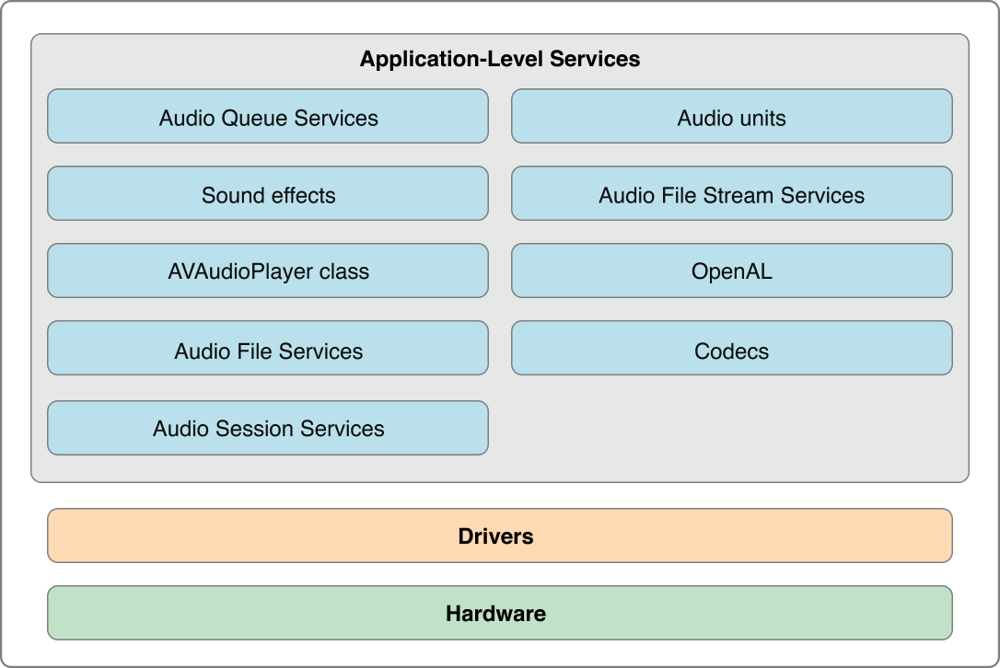
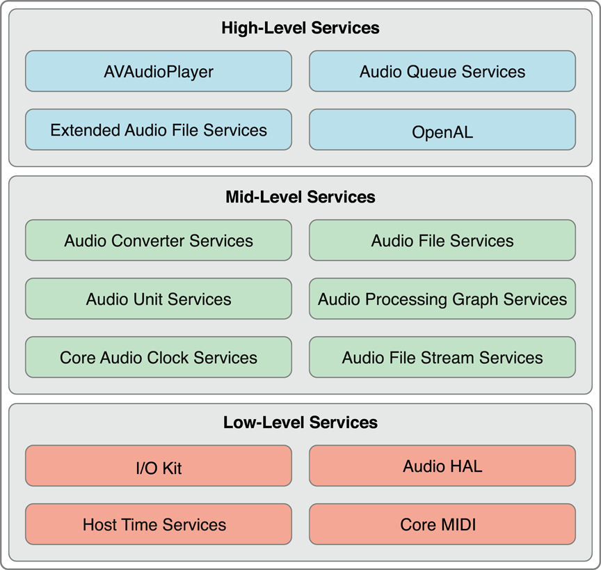
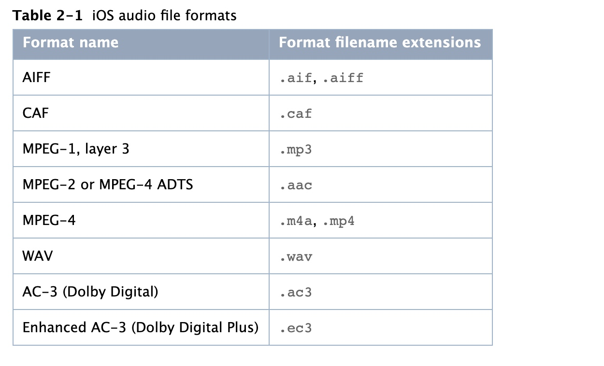
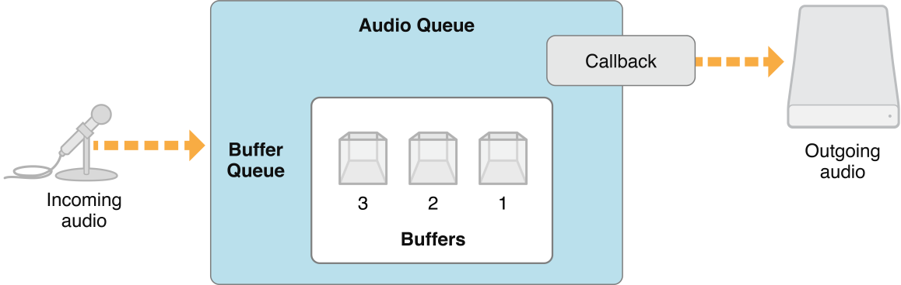
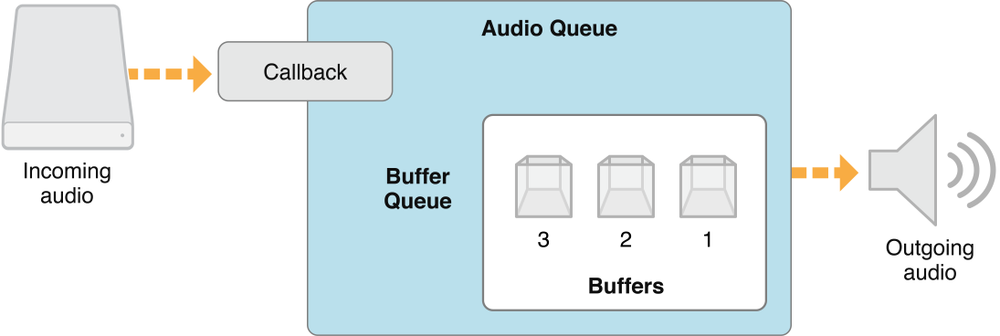
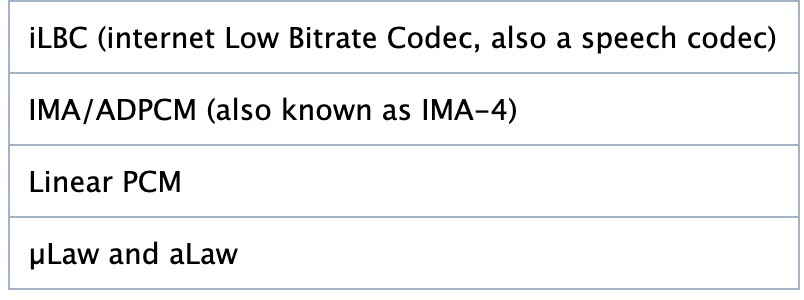
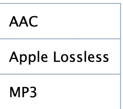
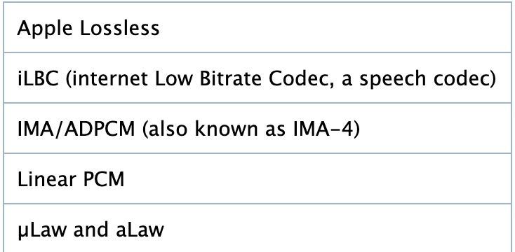
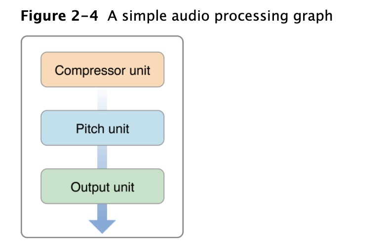
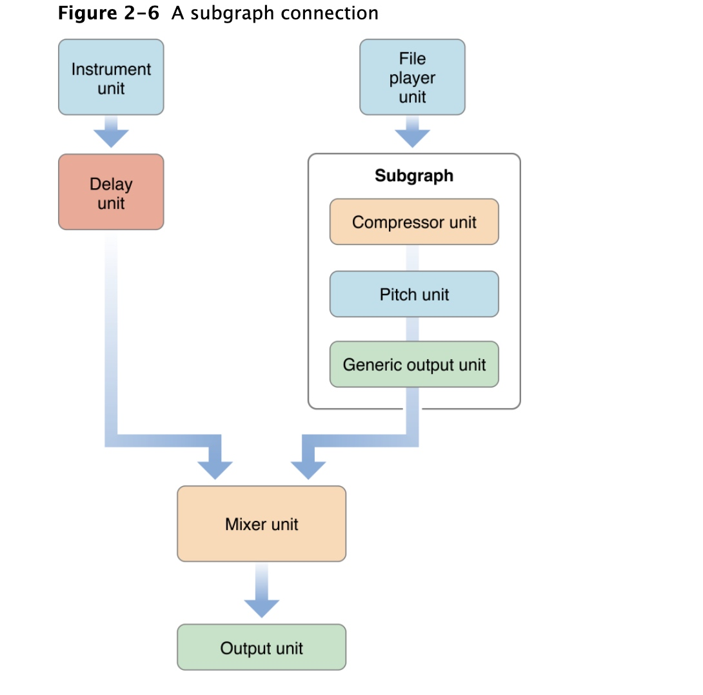

CoreAudio
Apple官网Core Audio Overview
Core Audio 提供了在iOS和OS X创建的应用中实现音频功能的接口。基于其，我们可以处理音频平台的所有方面。
在iOS中，其包括录制、回放、声音效果、定位、格式转换和文件流解析，以及：
- 在应用中使用内置的均衡器和混频器
- 自动访问音频输入、输出硬件
- 提供在接听电话环境中对应用音频方面的管理API
- 在不影响音频质量的情况下优化和延长电池寿命
Core Audio是将C和Object-C的编程接口与系统机密结合在一起，形成灵活的编程环境，从而在整个信号链中保持较低的延迟
What is Core Audio？
Core Audio是iOS和OS X中的数字音频基础服务。包含一系列满足应用处理音频需求的框架。
iOS中的Core Audio

可以再Audio Unit和Audio Toolboxframework中找到Core Audio Applicaiton-level服务
- 使用
Audio Queue Service，记录、回放、暂停、循环和同步音频 - 使用
Audio File Service，从磁盘上读写文件，并且执行音频格式转换 - 使用
Audio Unit Service和Audio Processing Graph Service继承在应用中管理Audio Unit - 使用
System Sound Service播放系统声音和用户界面音效 - 使用
Audio Session Services允许在iPhone上下文环境中管理音频行为
Audio Units
Audio Units是处理音频数据的软件插件。在OS X中一个音频单元可以用无无限数量的通道和应用程序
在iOS中提供了一系列音频单元，并针对移动平台进行优化。可以自己开发Audio Unit在应用程序中使用，此时你必须将自定义的audio unit连接到静态链接到应用中，因此无法被其他应用使用
iOS中提供的audio unit并没有用户界面，他主要用于在应用中提供低延迟音频，请参阅Core Audio Plug-ins: Audio Units and Codecs.
硬件抽象层
Core Audio使用应用抽象层(Hardware Abstraction LayerHAL)为应用程序和硬件交互提供了一致并可预测的接口。HAL还提供了时序信息，来建华同步或调整延时
在大多数情况下 我们都不会直接和HAL交互。Apple提供了特殊的audio unit(在OS中称为AUHAL，在iOS中称为AURemoteIO单元),可以将音频从一个人音频单元传递给硬件。同样，来自硬件的输入也会通过其进行传输，并且可供后续的音频单元使用
AUHAL/AURemoteIO还负责在audio unit和硬件间转换音频数据所需的 数据转换和声道映射
Core Audio Essentials
Apple采用了分层、协作、以任务为中心方式设计了Core Audio接口。
简要介绍接口以及如何协同工作
分层架构

在low-level
- I/O kit 与驱动程序交互
- HAL：硬件抽象层，提供了与设备无关、与驱动无关的接口
- MIDI: 提供了处理MIDI流和设备的软件抽象
- Host Time Services：用于访问计算机时钟
我们通常无法访问此层，在Ios中，Core Audio提供了更高层次接口来实现实时音频功能
在mid-level: 包括了用于 格式转换、从磁盘读写、解析流、以及使用插件的服务
Audio Converter Service使应用可以使用音频格式转换器Audio File Services支持从磁盘读写文件Audio Unit Service和Audio Processing Graph Service使应用程序可以使用数字信号处理插件，例如均衡器和混响器Audio File Stream允许构建可解析流应用程序，例如用于播放网络连接流式文件Core Audio Clock Services支持音频和MIDI同步
在high-level： 包括了结合较低层次功能的简化的界面
Audio Queue Services：允许录制、播放、暂停、循环并且同步音频。它会根据需要采用编码器来处理压缩的的音频格式AVAudioPlayer：提供了简单的OC接口 用于播放和循环音频，来实现倒带和快进功能Extended Audio File ServiceOpen AL是用于位置音乐的开源Open AL的实现，基于系统提供的3D Mixer audio unit。一般用于游戏开发
framework
AudioToolbox.framework提供了mid-level和high-level服务接口。在iOS中，框架包括了Audio Session服务，这个session接口是用于充当手机等设备的上下文中官路应用程序的音频行为AudioUnit.framework使用应用程序可以使用音频插件，包括audio unit和解码器CoreAudio.framework提供了跨core audio使用的的数据类型以及用于低层服务的接口CoreAudioKit.framework提供一个小的接口用于为音频单元创建用户界面(iOS不可用)CoreMIDI.framework使应用程序可以处理MIDI数据并配置MIDI网络(在iOS中不可用)CoreMIDIServer.framework使MIDI驱动程序和OS X MIDI服务器通信。(iOS中不可用)OpenAL.framework提供与OpenAL使用的接口
注意Core Audio framework并不是其它framework的集合，而是一个框架
Core Audio的设计原理，使用模式和编程习惯
代理对象
Core Audio使用代理对象(proxy object)的概念来呈现例如：文件、流、audio player对象等。
属性、范围和元素
大多数的Core Audio接口都使用属性机制来管理对象状态或者重定义对象行为。属性是键值对
- 属性键通常是带有助记名的常量 例如
kAudioFilePropertyFileFormat、kAudioQueueDeviceProperty_NumberChannels等 - 属性值为适合该数据类型的特定类型 例如
void *、Float64、AudioChannelLayout结构体
Core Audio接口使用访问器函数从对象中检索属性值，并在属性可写时，更改属性值。还可以找到第三种访问器函数，用于获取有关属性的信息。例如：Audio Unit Service函数AudioUnitGetPropertyInfo可以获取给定属性值数据类型的大小以及是否可写、Audio Queue Service中的AudioQueueGetPropertySize可以获取指定属性值大小
Core Audio提供了一种机制来通知应用程序 属性值已经更改。请参阅Callback Functions: Interacting with Core Audio.
在某些情况下，属性会整体应用于音频对象。
而其他的一些Core Audio对象具有内部结构，每部分都可能有自己的属性。例如，在audio unit有输入范围、输出范围以及全局范围。audio unit的输入输出范围由一个或多个元素组成，当调用AudioUnitGetProperty函数获取kAudioUnitProperty_AudioChannelLayout属性，除了要指定那个unit之外，还要指定范围(input为/output)以及元素(0、1、2等)
对Core Audio交互的回调函数
许多Core Audio使用回调函数和应用程序通信
- 向应用程序交付一组信息的音频数据(例如：用于录制，在回调中将新的数据写入磁盘)
- 从应用程序请求一组新的音频数据(例如：用于播放，回调从磁盘读取并提供新数据)
- 告诉应用程序 软件的对象状态已经改变
对于回调，操作系统会触发在应用程序中实现的行为。
- 根据模板实现回调函数
- 将回调函数注册到要交互的对象中
Core Audio如何处理文件，流，记录和播放以及插件
Audio Data Formats
Core Audio 使无需了解了解音频格式的详细知识。
音频数据格式本质上描述了音频数据，包括采样率，位深度和包化等内容
音频文件格式描述了声音文件的音频数据，音频元数据和文件系统元数据如何在磁盘上排列。有的文件格式只能包含一种音频数据格式，而其他文件格式可以包含多种音频数据格式
Core Audio中的通用数据类型
在Core Audio中可以使用声明在CoreAudioType.h中的结构体AudioStreamBasicDescription和AudioStreamPacketDescription两个通用数据类型来表示任何音频数据格式
AudioStreamPacketDescription类型，描述某些压缩的的音频数据格式
常将
audio stream basic description简写为ASBD
获取声音文件数据格式
我们虽然可以手动设置ASBD的成员值，但是可能某些填写会出现问题。我们可以将结构成员值设置为0，然后使用Core Audio接口填充结构体。例如可以使用Audio File Service为磁盘上文件提供完整的ASBD
音频数据格式标准
平台不同，存在一种或者两种 标准的音频数据格式
在Core Audio中的标准格式常用于：
- 转换的中间格式
- 优化Core Audio service 的 格式
- 如果在不指定ASBD，则作为默认或者假定的格式
在iOS中的格式标准：
- iOS中16bit整数样本的输入和输出的线性PCM
- iOS的audio unit和其它音频处理 8.24bit定点样本的非交错线性PCM
8.24有时写为Q8.24或fx8.24。定点采样大小用作iOS中处理线性PCM音频的规范音频采样类型，代替32位浮点采样。在8.24音频样本中，小数点左侧有8位，形成该值的整数（或“幅值”）部分，右侧有24位，构成小数部分
//44.1kHZ采样率的双通道 标准iPhone audio unit的格式
struct AudioStreamBasicDescription {
mSampleRate = 44100.0;
mFormatID = kAudioFormatLinearPCM;
mFormatFlags = kAudioFormatFlagsAudioUnitCanonical;
mBitsPerChannel = 8 * sizeof (AudioUnitSampleType); // 32 bits
mChannelsPerFrame = 2;
mBytesPerFrame = mChannelsPerFrame * sizeof (AudioUnitSampleType); // 8 bytes
mFramesPerPacket = 1;
mBytesPerPacket = mFramesPerPacket * mBytesPerFrame; // 8 bytes
mReserved = 0;
};
//这些常量在 CoreAudioTypes.h 头文件声明
Magic Cookies
在Core Audio领域， magic cookie是连接压缩声音文件或流的一系列不透明元数据
元数据为解码器提供了解压文件或者流需要的详细信息。
可以将magic cookie视为黑盒，依靠Core Audio功能去复制、读取、使用包含的元数据
- (void) copyMagicCookieToQueue: (AudioQueueRef) queue fromFile: (AudioFileID) file {
UInt32 propertySize = sizeof (UInt32);
OSStatus result = AudioFileGetPropertyInfo (
file,
kAudioFilePropertyMagicCookieData,
&propertySize,
NULL
);
if (!result && propertySize) {
char *cookie = (char *) malloc (propertySize);
AudioFileGetProperty (
file,
kAudioFilePropertyMagicCookieData,
&propertySize,
cookie
);
AudioQueueSetProperty (
queue,
kAudioQueueProperty_MagicCookie,
cookie,
propertySize
);
free (cookie);
}
}
Audio Data Packets
数据包是一个或者多个帧的集合，对于给定音频格式，这是最小有意义的帧的集合。因此，它是音频文件中代表时间单位最好的音频数据单元。
在Core Audio中通过对数据包进行计数来实现同步功能，可以使用data packets来计算有用的音频数据缓冲区大小
在ASBD中用mBytesPerPacket和mFramesPerPacket成员变量描述有关数据包的基本信息，因为某些数据包并不是恒定不变的，因此对于需要其他额外信息，可以使用audio stream packet description
三种packet包类型
- CBR(contant bit rate)：恒定比特率，所有数据包大小相同
- VBR(variable bit rate):可变比特率，所有数据包帧数相同，但是每个采样值的bit可能不同
- VFR(variable frame rate):数据包具有变化的帧数。这种类型格式并不常用
对于VBR和VFB需要使用AudioStreamPacketDescription结构体进行描述。每个这样的结构体都描述了声音文件中的单个数据包，当需要录制或者播放这样的声音文件，需要这种结构的数组
在Audio File Services 和 Audio File Stream Services中允许使用packet。例如，AudioFile.h文件中的AudioFileReadPackets从磁盘的声音文件中读取一系列的放置在buffer中的packets，同时返回一组AudioStreamPacketDescription结构体描述每个packet
对于常用的CBR和VBR格式中，file或者stream每秒返回包的数量是固定的，包意味着格式的时间单位。在应用程序中计算实际的音频缓冲区大小时，可以使用包。
数据格式转换
要将音频数据从一种格式转换为另一种，可以使用音频转换。
可以做一些简单的转换，例如：采样率、交错或非交错编码。当然也可以做复杂一点的转换，例如：编解码音频。
- 解码音频格式(例如AAC格式)为PCM格式
- 将PCM线性数据转换为其他音频格式
- 在线性PCM格式之间转换，例如，将16位带服务号整数线性PCM转为8.24定点线性PCM
当使用Audio Queue Service时，将会自动获得合适的转换器。
声音文件
每当想在应用程序中使用声音文件时，可以使用Audio File Services。其为访问文件中包含的音频数据和元数据以及创建声音文件提供了强大的抽象功能
Audio File Services 不仅可以使用基础功能如唯一的file ID和数据格式，还可以使用区域和标记、循环播放、播放方向以及SMPTE时间码等
Audio File Services还可以用来发现系统特征。使用的功能为AudioFileGetGlobalInfoSize和AudioFileGetGlobalInfo，在AudioFile.h中声明了一列属性可以获取系统特征：
- 可读文件类型
- 可写文件类型
- 对于可写类型，可以将以您数据格式放入文件中
创建一个新的声音文件
当创建一个声音文件进行记录时：
- 文件的系统路径，以CFURL或者NSURL形式
- 要创建的文件类型标识，如
AudioFile.h中声明的Audio File Types所示 - 放入文件中的ASBD，在大多数情况下，之粗腰提供部分ASBD，然后要求Audio File Service为你填充接下来部分
将这三部分作为参数传递给AudioFileCreatWithURL函数，返回一个AudioFileID对象
AudioFileCreateWithURL (
audioFileURL,
kAudioFileCAFType,
&audioFormat,
kAudioFileFlags_EraseFile,
&audioFileID // the function provides the new file object here
);
打开声音文件
使用AudioFileOpenUrl函数打开文件，为该函数提供文件的URL、文件类型常量。以及使用文件的访问权限。
然后使用属性标识符号和AudioFileGetPropertyInfo和AudioFileGetProperty函数来检索需要的文件信息，常用的属性有
kAudioFilePropertyFileFormatkAudioFilePropertyDataFormatkAudioFilePropertyMagicCookieDatakAudioFilePropertyChannelLayout在Audio File Servie中包含许多类似标识,可以快速获取文件中存在的元数据 例如：区域标记、版权信息、播放速度等
当VBR文件很长时，获取整个数据包表可能会话费大量时间，此时可以使用kAudioFilePropertyPacketSizeUpperBound和kAudioFilePropertyEstimatedDuration。可以使用它们来快读估算VBR声音文件的持续时间和数据包数量，而不需要解析整个文件来获取确切的数量
读写声音文件
在iOS中 通常使用Audio File Services来读写音频文件，其两者是互为镜像操作。两个操作都会阻塞直到完成，并且都可以使用packet和byte操作，但是除非有特殊要求，我们总是使用packets 原因如下：
- 按包读取和写入是VBR数据的唯一选择
- 使用基于数据包的操作可以更轻松地计算持续时间
iOS中 也可以使用Audio File Stream Service从磁盘读取音频数据。参阅Sound Stream
Audio Queue Service声明在Audio ToolBox的AudioQueue.h中，用于录制和播放Core Audio 可以参阅Recording and Playback using Audio Queue Services
iPhone 支持的音频文件格式
有关iOS中可用的音频数据格式的信息，请参阅编解码器

CAF
CAF是iOS或者OSX 本机音频文件格式(核心音频格式)，可以包含平台支持的任何音频数据格式
Sound Streams
与基于磁盘的声音文件不同，音频文件流无法访问其开始和结束的音频数据。并且流数据也可能是不可靠的，可能存在信号丢失、不连续、暂停的情况，取决于用户的网络状况。
使用Audio File Stream来使应用程序处理流和其复杂情况，并解析。
使用Audio File Stream需要创建一个AudioFileStreamID类型的对象来作为流的代理对象。也可以通过该对象属性获取当前流信息(例如，当Audio File Stream Services确定bit rate后，会将其设置到该对象的kAudioFileStreamProperty_BitRate属性)。
因为Audio File Stream执行了解析工作，因此应用程序 需要定义两个回调函数来使应应用程序响应给定的音频数据集合和其他信息
需要为stream object对象的属性改变那定义回调。至少，需要这个回调来为
kAudioFileStreamProperty_ReadyToProducePackets属性的改变做出响应。此时，我们通常流程如下：- 用户点击播放按钮，请求流开始播放
Audio File Stream Services开始解析流- 当有足够多的音频数据包解析发送到应用程序时，
Audio File Stream Services设置streamObject的kAudioFileStreamProperty_ReadyToProducePackets属性为true - 触发应用程序的属性改变回调
- 回调函数采取适当的措施，例如设置音频队列来播放流信息
需要为音频数据设置回调，无论何时
Audio File Stream Services获取到一组完整的音频数据包是都会调用这个回调，通常将其发送到Audio Queue Service立即进行播放。可以参阅Recording and Playback using Audio Queue Services
Audio Session
在iOS上，当播放音频时 此时手机可能有更重要的事情 例如打电话，我们需要对这些情况做出正确的应对。
Audio Session是应用程序和iOS系统中的中介。每个iPhone应用只有一个Session。将其配置为应用程序的播放音频目的。
可以使用AudioToolBox中的AudioService.h声明的接口来配置应用程序。
| Category | 用于标识应用程序的音频行为，将音频意图指示给iOS(例如在锁屏状态是否继续音频) |
|---|---|
| 播放中断和播放路线改变 | Audio Session会在音频中断，中断结束，和硬件路由改变(例如插拔耳机)发布通知。这些通知可以优雅响应音频环境更改(例如因为来电而导致的中断) |
| 硬件特点 | 可以查询Audio Session，发现运行应用程序的设备特性，例如硬件采样率，硬件声道数，以及音频输入是否可用 |
默认行为
在audio session中会自带一些默认行为
- 当用户在“响铃/静音”之间切换时， 音频也将会静音
- 当用户按下“睡眠/唤醒”按钮，或者在“自动锁定”时间到期时， 音频也将会静音
- 当你的音频开始播放时，设备上其它音频 将会被静音
这组行为是有默认的audio session category(kAudioSessionCategory_SoloAmbientSound)指定。iOS中提供了广泛的音频需求 分类,可以在应用程序启动和运行时指定需求分类
audio session的默认行为足够进行iPhone的音频开发，但是除了特殊情况，默认行为并不适合于正在传输的应用程序
中断：暂停和激活
在默认行为中明显缺少的一项功能是能够在中断后重新激活自身。
audio session有两个主要状态：活跃和非活跃状态。而音频仅仅在你的audio session处于活跃状态才会起作用
应用启动后，默认audio session处于活跃状态。但是，加入打来电话，session将立即进入费活跃状态，并且auduo被停止，这即为中断。此时，假如用户选择忽略电话，应用程序将会继续运行，但是audio session处于费活跃状态，音频并不会正常播放
假如在应用中使用OpenAL、I/O audio unit、或者Audio queue Service播放音频，则必须编写监听中断的回调函数并且在audio session中断结束时 显示的重新激活。可以参阅Audio Session Programming Guide 提供的详细信息 和 示例代码
假如在应用中使用的时 AVAudioPlayer，则该类或为你重新激活audio session
确定音频输入是否可用
对于一个录制的应用，只能在硬件音频输入设备可用时 进行录制。此时可以使用audio session中的kAudioSessionProperty_AudioInputAvailable属性。
UInt32 audioInputIsAvailable;
UInt32 propertySize = sizeof (audioInputIsAvailable);
AudioSessionGetProperty (
kAudioSessionProperty_AudioInputAvailable,
&propertySize,
&audioInputIsAvailable // A nonzero value on output means that
// audio input is available
);
使用Audio Session
一个应用程序 一次仅仅只有一个音频category。因此，在一段时间 所有音频都会遵循这个活动category(当使用System Sound Service时是例外的，此类音频用户将饱和用户界面音效，始终使用优先级最低的category)。可以查看Audio Session Programming Guide 中的Responding to Interruptions 描述了所有category
模拟器不会模拟session 因此请在真机上进行测试
使用AVAudioPlayer 播放
AVAudioPlayer为音频播放提供了简单的OC接口。如果应用并不需要立体声定位和精确同步，或者也不需要播放网络流，可以受用此类
其提供了以下功能：
- 播放任何时间长度的声音
- 播放磁盘文件或者内存缓存中的声音
- 循环播放
- 同时播放多种声音
- 控制正在播放声音的相对播放级别
- 在声音文件中寻找特定点进行播放，支持诸如快进快退等功能
- 获取可用于
audio level metering的数据
AVAudioPlayer可以播放任何iOS中可用的任何音频格式声音。可以参阅AVAudioPlayer Class Reference.
与I/O audio unit以及OpenAL不同，AVAudioPlayer并不需要使用audio session。其自动会在中断后重新激活，假如想要默认audio session category指定的默认行为，可以将默认的audio session和audio player一起使用
使用AVAudioPlayer需要指定 声音文件，prepare play并指定delegate。可以使用delegate来处理终端，并且在播放完毕后，更新用户界面。可以参阅AVAudioPlayerDelegate Protocol Reference.
使用Audio Queue Service 播放和录制
Audio Queue Service提供了一种直接、低开销的方式 记录和播放音频。可以使无需访问硬件接口即可使用硬件录制和播放设备。还可以在无需了解编码器工作原理，使用复杂的编解码器。
尽管其为high-level接口，但是也支持一些高级功能，例如：提供了细化的定时控制，支持计划的播放和同步，可以使用其来同步多个音频队列，播放声音，并且让独立控制对个声音的播放音量执行loop。Audio Queue Service和AVAudioPlayer是在iPhone上播放压缩的音频的仅有的方式
我们通常会将 Audio Queue Servie和Audio File Service或者Audio File Stream结合使用
Audio Queue 播放和录制功能的回调函数
对于录音，实现一个回调函数，该函数接收audio queue对象提供的audio data buffer并且并将其存入磁盘，当要有新的录音数据buffer传入时，audio queue对象将会调用回调

对于播放则和录制刚好相反。当audio queue对象，需要另外buffer才能播放时，就会调用该函数。然后，回调会从磁盘读取给定数量的audio packet，并将其交给audio queue object buffer。此时audio queue object buffer将会一次播放该buffer

创建queue对象
首先创建一个 audio queue 对象，尽管有两种类型，但类型均为AudioQueueRef
- 录制对象
AudioQueueNewInput函数 - 播放对象
AudioQueueNewOutput函数
当创建一个audio queue对象来播放时，需要以下三步
- 创建一个数据结构来管理audio queue所需的信息，例如：要播放的数据的音频格式
- 定义一个用于管理audio queue buffer的回调函数。回调使用
Audio File Service来读取要播放的文件 使用
AudioQueueNewOutput实例化audio queuestatic const int kNumberBuffers = 3; // Create a data structure to manage information needed by the audio queue
struct myAQStruct {
AudioFileID mAudioFile;
CAStreamBasicDescription mDataFormat;
AudioQueueRef mQueue;
AudioQueueBufferRef mBuffers[kNumberBuffers];
SInt64 mCurrentPacket;
UInt32 mNumPacketsToRead;
AudioStreamPacketDescription *mPacketDescs;
bool mDone;
};
// Define a playback audio queue callback function
static void AQTestBufferCallback(
void *inUserData,
AudioQueueRef inAQ,
AudioQueueBufferRef inCompleteAQBuffer
) {
myAQStruct *myInfo = (myAQStruct *)inUserData;
if (myInfo->mDone) return;
UInt32 numBytes;
UInt32 nPackets = myInfo->mNumPacketsToRead;
AudioFileReadPackets (
myInfo->mAudioFile,
false,
&numBytes,
myInfo->mPacketDescs,
myInfo->mCurrentPacket,
&nPackets,
inCompleteAQBuffer->mAudioData
);
if (nPackets > 0) {
inCompleteAQBuffer->mAudioDataByteSize = numBytes;
AudioQueueEnqueueBuffer (
inAQ,
inCompleteAQBuffer,
(myInfo->mPacketDescs ? nPackets : 0),
myInfo->mPacketDescs
);
myInfo->mCurrentPacket += nPackets;
} else {
AudioQueueStop (
myInfo->mQueue,
false
);
myInfo->mDone = true;
}
}
// Instantiate an audio queue object
AudioQueueNewOutput (
&myInfo.mDataFormat,
AQTestBufferCallback,
&myInfo,
CFRunLoopGetCurrent(),
kCFRunLoopCommonModes,
0,
&myInfo.mQueue
);
控制audio queue播放音量
有两种方式来控制：
- 直接设置：使用
AudioQueueSetParameter函数和kAudioQueueParam_Volume，更改后立即生效 - 也可以使用
AudioQueueEnqueueBufferWithParameters函数设置音频队列缓冲区的播放音量。这些更改在缓存区开始播放时生效
Indicating Audio Queue Playback Level
可以通过查询音频对象的kAudioQueueProperty_CurrentLevelMeterDB属性来从音频队列对象获取当前播放级别。此属性的值是AudioQueueLevelMeterState结构的数组，每个通道一个。
同时播放多个声音
要同时播放多个声音，需要为每个声音设置一个audio queue obeject。使用AudioQueueEnqueueBufferWithParameters函数对每个音频队列，将音频的第一个缓冲区设为同时开始
在iPhone上同时播放，音频格式很重要。因为在iOS中某些压缩格式的播放使用了硬件解码器。而一次只能在一下设备上播放以下格式之一的单个实例：
- AAC
- ALAC
- MP3
结余参阅Audio Queue Services Programming Guide
使用OpenAL进行定位播放
系统声音:警报和音效
当要在不需要设置level、positon、audio session时，播放短声音文件可以使用System Sound Services.其声明在AudioToolBox的AudioServices.h头文件中。在iOS中播放声音时长 不能超过30s
调用AudioServicesPlaySystemSound函数播放指定声效文件。另外，可以在需要提醒用户时，调用AudioServicesPlayAlertSound。当用户设置了静音开关，这两个功能都会引起震动。
也可以在调用AudioServicesPlaySystemSound函数时 使用kSystemSoundID_Vibrate显示调用震动
使用AudioServicesPlaySystemSound需要首先创建sound ID 对象，将声音效果文件注册为系统声音，然后可以播放声音。如果在需要偶尔或者重复播放声音时，请保留声音对象，直到应用退出，如果只使用一次声音的话，可以再播放声音后，在声音完成回调中立即销毁对象，释放内存
核心音频插件：Audio unit和解码器
Core Audio有用于处理音频数据的插件机制。
在iOS中，系统提供了这些插件，每个应用程序可以使用多个audio unit或者codec
Audio Units
在iOS中Audio Unit为应用提供了实现低延迟的输入和输出机制，以及某些DSP功能，与OSX不同，audio unit并没有自己的使用视图。
可以再iOS和OSX平台上，都可以在Audio Unit framework的AUCompoment.h头文件找到内置音频单元的程序名称
iOS Audio unit 使用8.24bit 定点线性PCM音频数据来进行输入和输出。(converter unit是一个例外)。iOS audio unit为：
- 3D mixer unit： 允许任意数量的单声道输入，每一个都可以为8bit或者18bit的线性PCM。提供一个8.24bit定点PCM的立体声输出。
3D mixer unit在输入上执行采样率转换，并对每个输入通道提供很多控制。这些控制包括声音，静音、panning、距离衰减和这些更改的rate控制。这就是kAudioUnitSubType_AU3DMixerEmbeddedunit Multichannel mixer unit:允许任意数量的单声道或者立体声输入，每个输入都可以为16位线性定点PCM。提供一个8.24bit定点PCM的立体声输出。应用可以控制每个通道的静音或非静音，并控制器音量。使用kAudioUnitSubType_MultiChannelMixer单元Convert unit:提供了采样率、位深以及位格式(线性到定点)的转换。iPhone convert unit的标准格式为8.24定点线性PCM。将转换为该格式 或者从该格式转换。使用kAudioUnitSubType_AUConverterunitI/O unit:提供了实时的音频输入和输出，并根据俄需要执行采样率的转换。使用kAudioUnitSubType_RemoteIOunitiPod EQ unit：提供了可在应用中使用的简单均衡器，并有iPhone内置应用的相同预设。使用8.24定点线性PCM作为输入和输出。使用kAudioUnitSubType_AUiPodEQunit
可以参阅Audio Unit Programming Guide
在iOS中，应用程序使用audio unit service来发现和加在audio unit。每个audio unit呦类型、子类型和制造上代码3元素组合的唯一标识。其中，类型表示设备的通用用途，子类型更加精确的描述音频单元的功能，在编程上来说并不重要，但是当你的公司提供了多个效果unit，那么每个effct unit都必须有一个单独的子类型来与其他效果器分开。制造商代码则将你表示为unit的开发商。
audio unit使用属性来描述其功能和配置信息。
audio unit使用参数机制进行设置。通常由于用户实时调整,并不是函数参数，而是支持用户调整音频单元行为的机制。
解码器
使用iOS支持的解码器来录制和比方可以平衡音频质量、应用开发灵活性、硬件特性和电池寿命。
iOS中有两组播放编码器。
- 包括可以不受限制使用的高效格式(可以同时播放每种格式的多个示例) 
- 第二组共享一个硬件路径，因此只能一次播放一个 
iOS支持的录制编码器，并不包括AAC和MP3，因为其CPU高的消耗带来的高耗电

AUGraph
audio processing graph(也可称为AUGraph)定义了一组串在一起执行复杂任务的audio unit 集合。当定义graph时，可以有一个可重用的处理模块，可以在应用程序的信号链中添加和删除模块
processing graph通常由I/O unit结束。I/O unit通常通过low-level service和硬件项链，但是这不是必须的，I/O unit可以将其输出发送回应用程序
也可以看到processing graph头结点(node)为I/O单元。I/O unit是唯一可以开始和停止graph中数据流的单元。每个audio unit 都会向其后继者注册一个render callback，允许其后继者向其请求数据，当I/O单元开始数据流时，render方法就会调用其audio unit请求数据，而又会调用其前者的audio unit，以此类推
iOS中只有单一的I/O unit，但是OS X上就多了。

graph中每个audio unit都可以称为node。通过将一个node的输出附加到拎一个node
的输入来建立连接。
可以将audio processing graph组合为一个更大的graph，其中子图在更大图中也额为一个node

每个graph必须以I/O单元结尾。如果其输出只供应用程序使用，应该使用不与硬件连接的
generic I/O unit结尾
Core Audio Frameworks
参阅Core Audio Frameworks来查看core audio中的框架以及其核心头文件